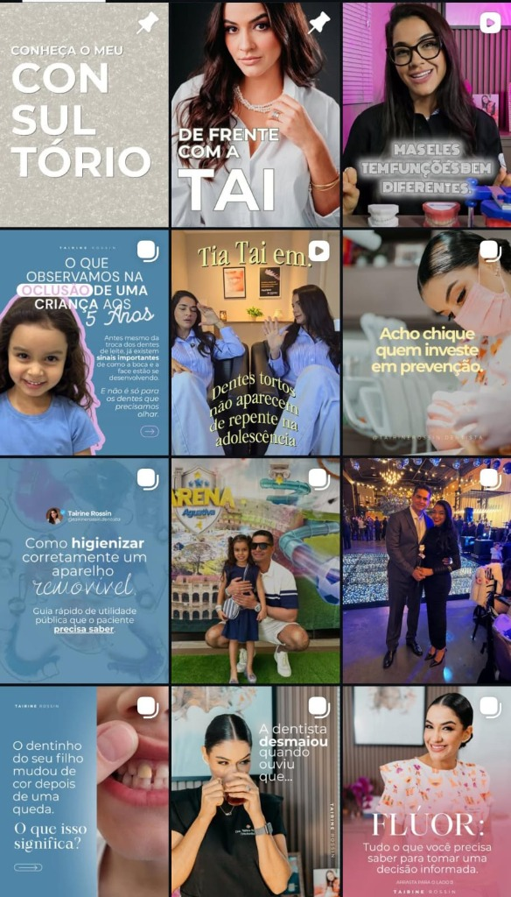

Odontologia

Dra. Tairine Rossin
Odontopediatria e estética odontológica. Feed humanizado com direção visual acolhedora e educativa que constrói conexão direta com famílias e valoriza o consultório.
Ver perfil no Instagram